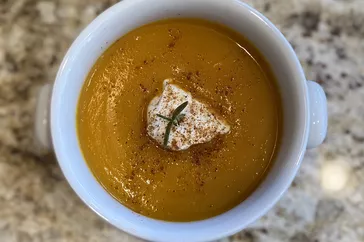
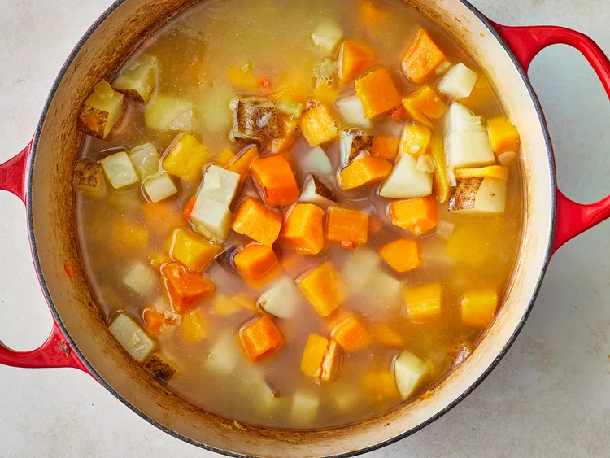
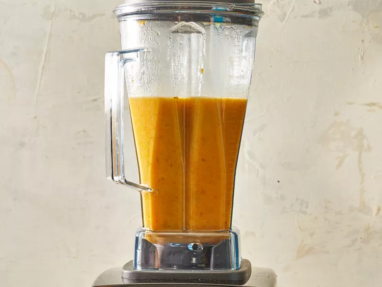
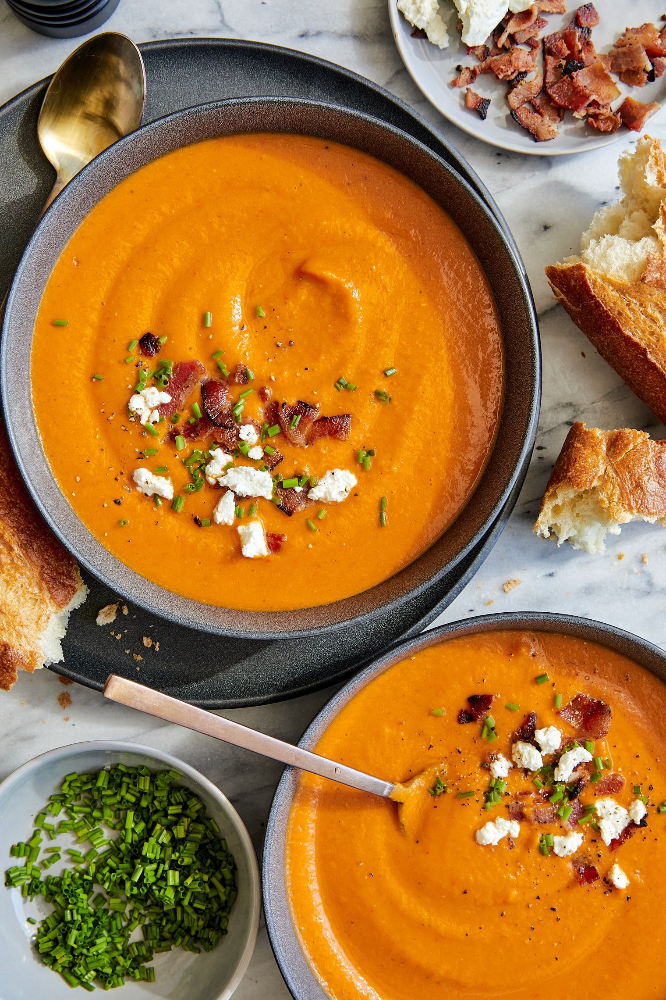
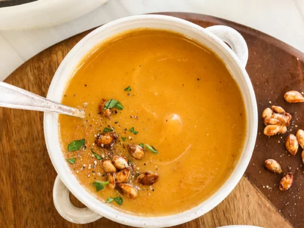
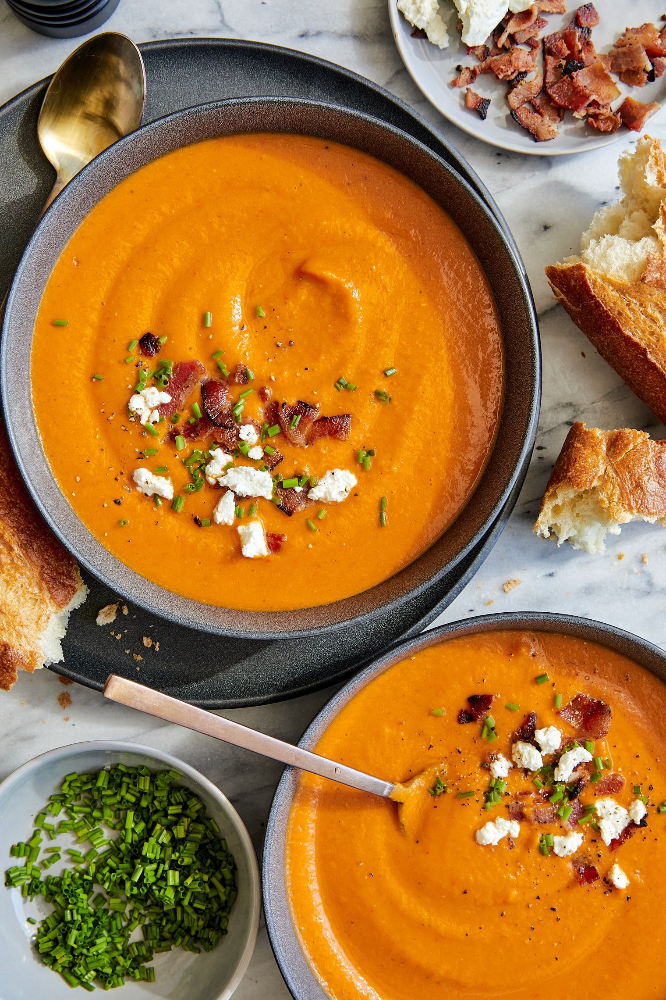
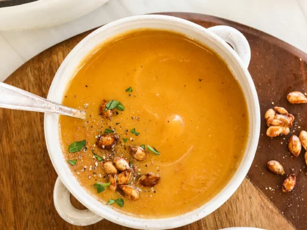

1. Butternut Squash Soup!

Description
A fall season homestay recipe, B.S.S. is a drink and eat - a dozen and all!
(Or is it only one of the two? We'll go with it because it was a good opening.)
Left to the first page you came from, it's as thick in looks as it is in flavor
- and in all consistency, it becomes ironically quite variable in what to include in its
blend. If you want it closer to a lingering spice, molding its taste into more to a curry would be more preferable -
but it doesn't mean you can't satisfy your sweet tooth with sugar, brown or not, and your own variety of extracts.

Veggie-minded chefs need not worry about contents when aiming for health and uniform zest: aside from the gourd-geous subject in the name,
Onions, celery, carrots, and potatoes are indispensable individuals to welcome to your liking (or not).
Meats like chicken are always welcome too, if you wouldn't like the soup to be *too* uniform - but broth/stock is necessary.
Don't forget herbs too, for the tinge they can provide. Some people's favorites include basil, peppers, and even bacon!
With its creamy orange-yellow look, it's a great profile of a recipe for the fall season, and just in time, too -
this document was practically made right at the start of it.
Prep Time: 20 min
Cook Time: 45 min
Total Time: around 1 hour 15 min (taking into account any variables)
Servings: 4
Ingredients
You're certainly welcome to follow your own intuition into what the perfect B.S.S. should be - so here's the standard, with their steps
(thanks to >AllRecipe's page on the item, provided by a "Maplebird!".):
- 2 tablespoons butter
- Vegetables: 1 small onion - chopped, 1 stalk of celery - chopped, 1 medium carrot - chopped, 2 medium potatoes - chopped
- Butternut Squash: medium, peeled, seeded, and cubed
- Meat(s): 32 fl oz chicken stock/broth
- Salt & Pepper: freshly grounded
Steps:
These aren't too hard to do at all! - just follow them word for word until it's done.
- First and foremost, gather all given ingredients nearby.
- Melt the butter in a large pot over medium heat.
- After having the butter melted, pour all chicken stock/broth in the same port and...
- ...cook all the mentioned veggies until lightly browned in the same pot until lightly browned, or around 5 minutes.

- Bring to a boil over medium-high, then reduce heat to low and cover the pot. Simmer until all veggies are tender - a 40 minute process, or 2/3 an hour.
- Transfer soup to a blender when complete, blend until reaching a smooth, uniform consistency.

- Return the blend to the pot and add in any final extras like leftover stock as desired - for more volume of the soup.
- Add seasoning and toppings like the above-revered bacon, salt, and/or pepper, and even your desired choice of nut(s) - but these additions aren't the only things you can welcome.
Why not flank the meal with an entire side dish, be it a salad or another preparation of veggies?
- Reheat if needed - to serve hot and ready!
10. Enjoy & savor!
Gallery: view other butternut squash soups here!
 



Next Recipe
Go back